Charte graphique
Nash Record · Direction artistique du site · v1
01 · Logo
Le logo et ses déclinaisons
Fichiers officiels vectorisés (SVG) dans assets/img/logo/. Ne jamais redessiner, déformer ni recolorer le logo : on utilise uniquement les versions blanche et noire.
Favicon, réseaux, merch, petits formats
Héro du site, en-têtes, signatures

Logo arc empilé · blanc sur sombreFormats carrés, affiches, stickers
Zone de protection
Autour du logo, garder un espace vide au moins égal à la moitié de la hauteur du monogramme (zone hachurée). Aucun texte, bord d'écran ou image ne doit y entrer. Taille mini à l'écran : 32 px de haut pour le NR, 120 px de large pour le logo droit. (Règle proposée, à valider par Malik.)
À ne pas faire
02 · Couleurs
Palette
Identité noir / blanc / gris, avec un seul accent : l'or champagne, utilisé avec parcimonie (boutons principaux, chiffres forts, petits labels).
#0a0a0a--color-bgFond principal#141414--color-bg-softFonds de blocs#1c1c1c--color-bg-elevatedCartes, éléments surélevés#f5f5f5--color-textTitres et texte#c9a961--color-accentAccent unique Nash#e2c178--color-accent-hotSurvol des boutons or#a8a8a8--color-text-mutedTexte courant secondaire#6b6b6b--color-text-faintMentions, légendesrgba(255,255,255,.08)--color-lineSéparateursCouleurs d'artiste, seulement sur leur propre page : Lola Rivera #e63946 · Fish Killa #ff6a1f · El Kapell #dc2626 / #1e3a8a.
03 · Typographies
Trois familles, trois rôles
Le logo a sa propre typo custom, anguleuse : elle n'existe qu'en logo, on ne la recrée jamais en texte. Le site utilise trois polices Google Fonts.
Le label certifié Diamant
Booking d'artistes, session studio, presse ou envoi de démo : écris-nous, l'équipe Nash Record te répond. Taille 16–18 px, interligne confortable.
Roster · Studio · Podcast · Booking
04 · Composants
Boutons & cartes
Un bouton or par écran pour l'action principale ; les autres en contour. Texte en majuscules espacées.
05 · Espacements
Rythme et grille
Échelle de 8 px. Contenu max 1280 px. Marges latérales 16 px sur mobile, jusqu'à 64 px sur grand écran. Sections aérées : 72 px (mobile) à 120 px (desktop). Arrondis : 4 px (boutons, champs), 12 px (cartes), 24 px (grands blocs).
06 · Ton éditorial
Comment on parle
Direct, fier, premium sans être froid. On tutoie le public et les artistes, on vouvoie seulement dans les échanges pro formels.
Court et concret
« Le label certifié disque de Diamant. » plutôt que de longues phrases. Des chiffres vrais, sourcés.
Fier de ses racines
Saint-Cloud, Paris, Conakry, Bezons, Madrid : on cite les lieux et les cultures des artistes.
Jamais inventé
Aucun chiffre, prix ou date non validé. Sinon : on n'affiche pas.
Exemples de boutons : « Réserver le studio » · « Booking » · « Voir le clip » · « Écouter sur Spotify ».